しゃべる時計 の紹介ページへ戻る
しゃべる時計 の使い方
しゃべる時計（Talking Clock）は、時刻を声で知らせる時計のアプリです。決めた時刻のお知らせや、お薬を飲む時間のリマインダーも声で読み上げます。
この説明は バージョン 0.1.0 の画面に合わせています（2026年11月26日、予定・天気つきのウィジェットを追加）。画面はこれから変わることがあります。画像の赤い枠と番号は、説明の番号と同じところです。
- はじめに
- 時計の画面
- 時報を決める
- お知らせを作る
- お薬リマインダー
- 声の設定（声の種類・あいさつ・充電中だけしゃべる）
- 着せ替えと文字盤
- 天気・直近の予定と、配置
- ホーム画面のウィジェット
- よくある質問
1. はじめに
- アプリを開き、通知の許可を聞かれたら「許可」を押します（画面を見ていないときに、時刻・お知らせ・お薬を通知で知らせるため）
- 設定の画面の上に「時刻ちょうどに鳴らす許可がないため…」と出たら、「許可する」を押し、開いた画面でこのアプリをオンにします（時報が少し遅れないようにするため）
- 音はメディアの音量で鳴ります。聞こえないときは、端末の音量ボタンでメディアの音量を上げてください
2. 時計の画面
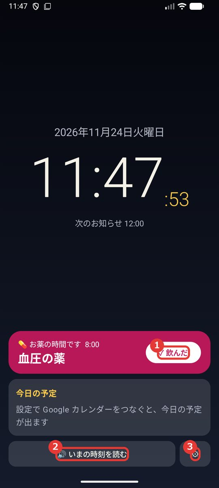
- 「✓ 飲んだ」：お薬の時間になると出るカードです。飲んだら押します（5.）
- 「🔊 いまの時刻を読む」：押すと、いまの時刻を声で読みます。読んでいるあいだは「■」で止められます
- 「⚙」：設定の画面を開きます
- 日付・時刻の下に「次のお知らせ」の時刻が出ます
- 設定の「Google カレンダー」の「つなぐ」を押し、アカウントを選んで許可すると、時計の画面に今日の予定が出ます（直近の予定にも変えられます。8.）。「📅 今日の予定を読む」で読み上げます（今はテスト中のため、テストに登録したアカウントだけつなげます）
- 設定の「画面をつけたままにする」が ON なら、時計の画面は消えません。置き時計として使えます
3. 時報を決める
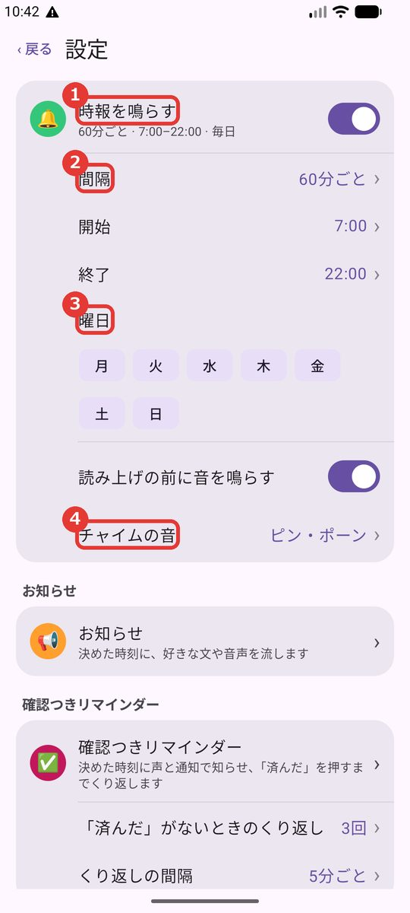
- 「時報を鳴らす」：ON にすると、決めた間隔で時刻を読みます
- 「間隔」：1 分〜12 時間から選びます。「開始」「終了」で鳴らす時間帯を決めます（夜をまたいでもかまいません）
- 「曜日」：鳴らす曜日を押して選びます
- 「チャイムの音」：読み上げの前に鳴らす音を選びます（下の画像）
- 「読み上げの前に音を鳴らす」が ON なら、読む前にチャイムが鳴ります。お薬の時間の前にも同じ音が鳴ります
- 時刻は「3時ちょうどです」「3時半です」のように読みます
チャイムの音を選ぶ
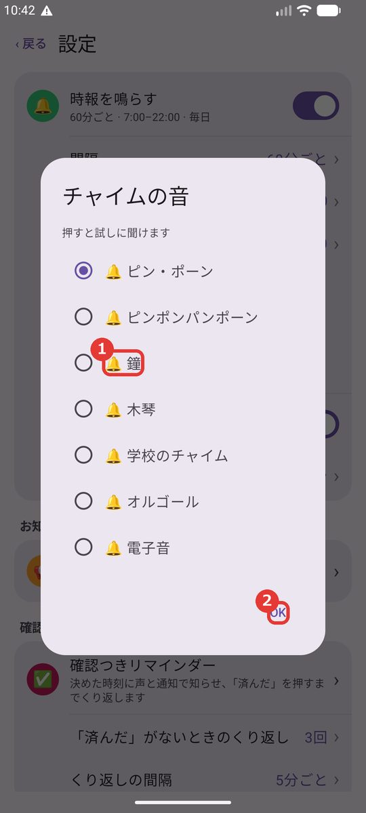
- 音を押すと、すぐその音が鳴ります。ピン・ポーン・ピンポンパンポーン・鐘・木琴・学校のチャイム・オルゴール・電子音から選べます
- 気に入った音を選んだら「OK」を押します
4. お知らせを作る
決めた時刻に、好きな文を読み上げたり、音声ファイルを流したりできます。設定の「お知らせ」を押して開きます。
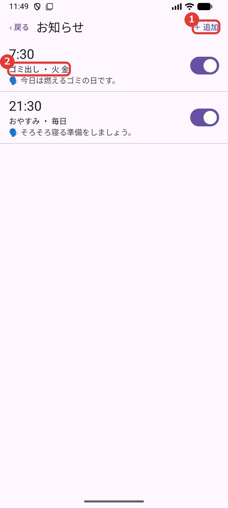
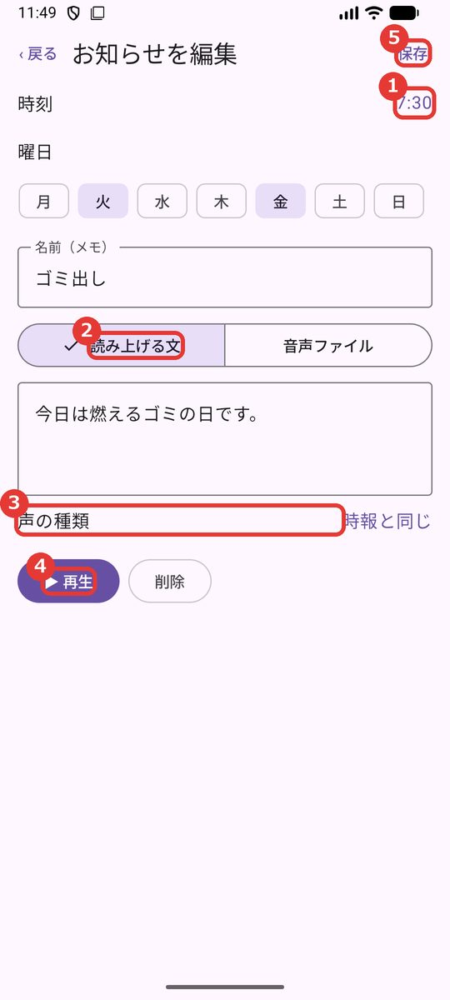
一覧（左）で「＋ 追加」を押すか、作ったお知らせを押すと、編集の画面（右）が開きます。
- 時刻を押して選びます。その下で曜日を選び、「名前（メモ）」を入れます
- 「読み上げる文」か「音声ファイル」を選び、読む文を入れるか、「音声ファイルを選ぶ」で端末の音声を選びます
- 「声の種類」：読み上げる文の声を選べます。「時報と同じ」のままなら、設定の声で読みます
- 「▶ 再生」：試しに流します
- 「保存」を押します
一覧の右のスイッチで、お知らせごとに ON / OFF できます。
5. お薬リマインダー
お薬を飲む時間を登録しておくと、その時刻に声と通知で知らせます。「飲んだ」を押すまで、何回か知らせ直します。
お薬を登録する
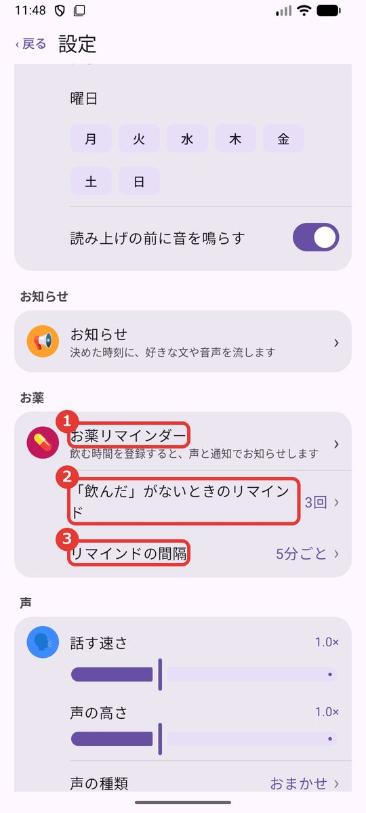
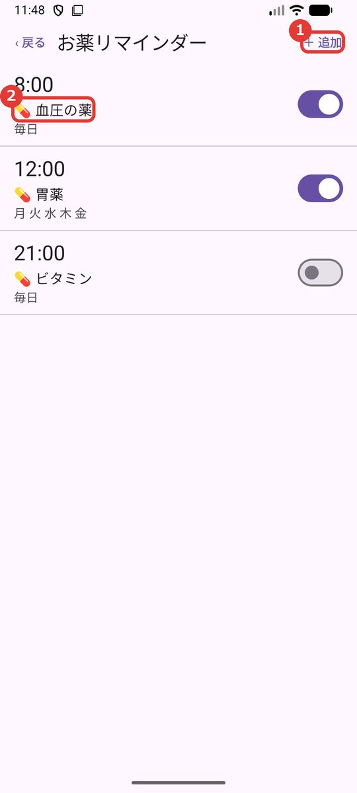
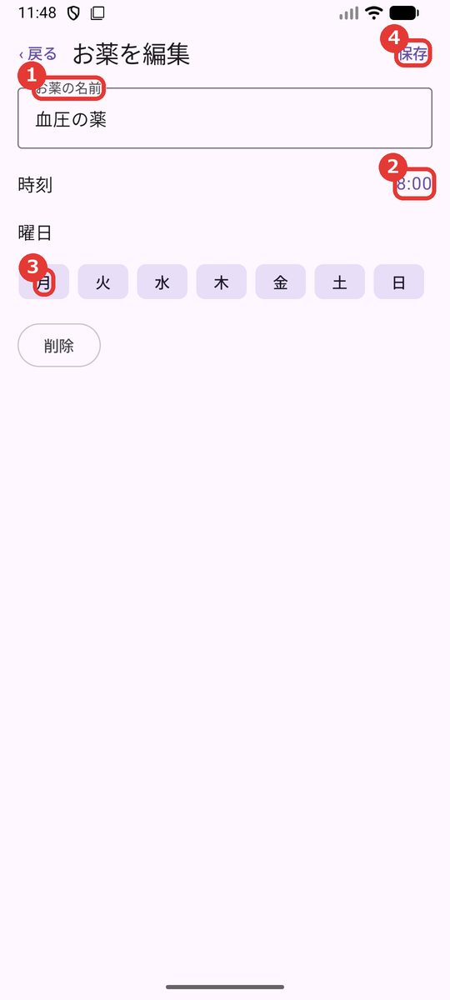
- 設定の「お薬」のカードの「お薬リマインダー」を押します（左の画像の 1）
- 一覧（真ん中）の「＋ 追加」を押します。作ったお薬を直すときは、お薬の名前を押します
- 編集の画面（右）で、「お薬の名前」（例：血圧の薬）を入れ、時刻を押して飲む時刻を選び、飲む曜日を押して選びます
- 「保存」を押します
- 朝・昼・晩など 1 日に何回も飲むときは、時刻ごとに 1 つずつ登録します
- 一覧の右のスイッチで、お薬ごとに ON / OFF できます。やめるときは編集の画面の「削除」を押します
お薬の時間になったら
- 「ピン・ポーン」のあと「お薬の時間です。血圧の薬を飲んでください。」と読み上げます
- 通知と、時計の画面のカードが出ます（2. の画像の 1）
- 飲んだら、時計の画面のカードか、通知の「飲んだ」を押します。カードと通知が消えます
「飲んだ」を押さないと、決めた間隔ごとに「血圧の薬は飲みましたか？」と知らせ直します。決めた回数を知らせ終わっても、カードは「飲んだ」を押すまで残ります。
知らせ直す回数と間隔を変える
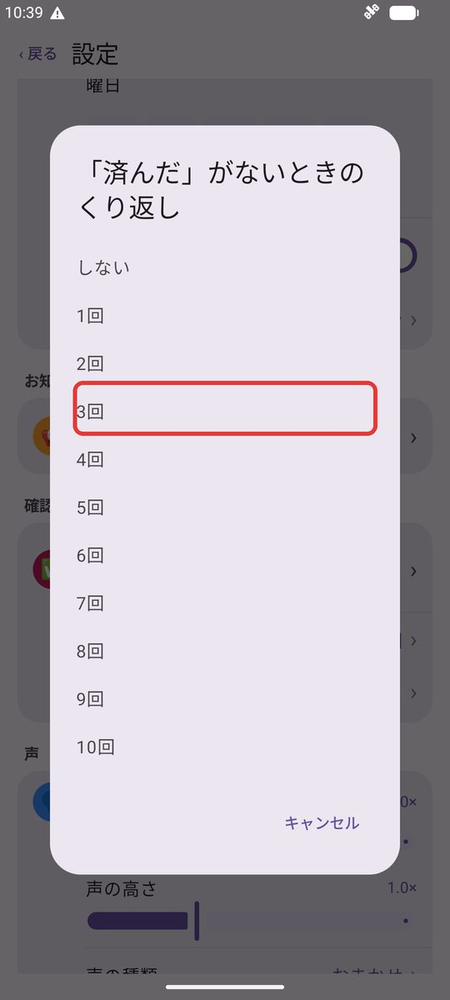
- 設定の「お薬」のカードの「「飲んだ」がないときのリマインド」を押し、「しない」〜「10回」から選びます（はじめは 3 回）
- 「リマインドの間隔」を押し、1 分〜60 分から選びます（はじめは 5 分ごと）
6. 声の設定
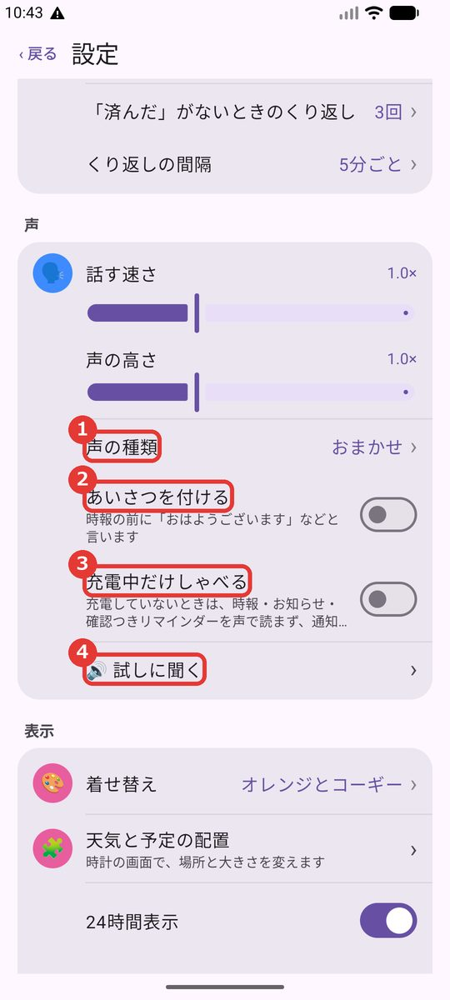
「話す速さ」「声の高さ」は、つまみを左右に動かして変えます。
- 「声の種類」：押すと、端末に入っている声の一覧が出ます（下の画像）
- 「あいさつを付ける」：ON にすると、時報の前に「おはようございます」（4〜10 時）・「こんにちは」（11〜17 時）・「こんばんは」と言います
- 「充電中だけしゃべる」：ON にすると、電源につないでいるときだけ、時報・お知らせ・お薬を声で読みます。充電していないときは声で読まず、通知だけ出します（お薬はカードも出ます）
- 「試しに聞く」：いまの設定で時刻を読みます
「充電中だけしゃべる」は、家では充電台に置いてしゃべらせ、持ち歩くときは静かにしたいときに便利です。「いまの時刻を読む」など自分で押したときは、充電していなくても読みます。
声の種類を選ぶ
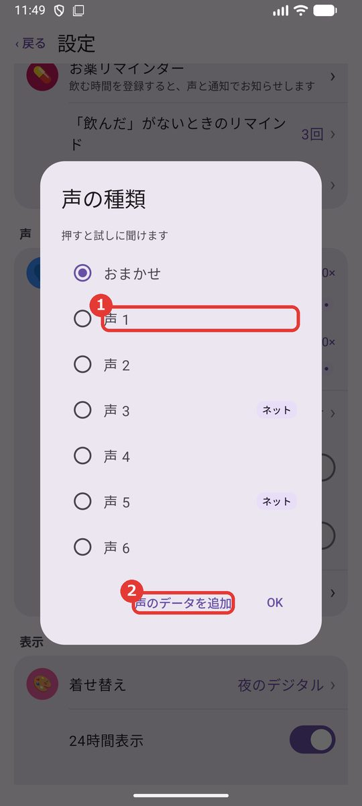
- 声を押すと、その声ですぐ試しに読みます。気に入った声を選んで「OK」を押します。「おまかせ」は、ネットなしで使える声のうち、いちばん良い声を自動で選びます
- 「声のデータを追加」：端末の読み上げの設定を開き、声のデータを追加できます
- 「ネット」の印がある声は、インターネットにつながっているときだけ使え、通信量を少し使います
- 声の数や声は、端末によって違います
7. 着せ替えと文字盤
設定の画面のいちばん上の見本か、「着せ替え」を押して開きます。
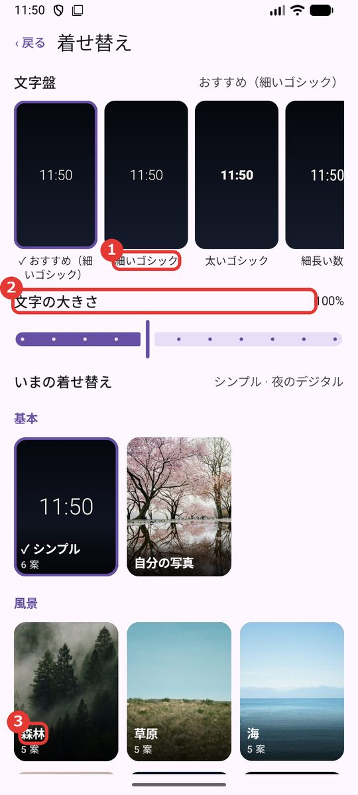
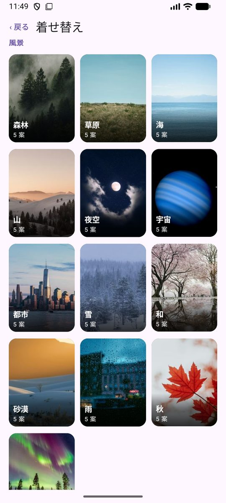
- 文字盤：上に、いまの背景に重ねた見本が横に並びます。左右になぞって、押して選びます（細い・太い・明朝・7 セグメント・針の時計など）
- 「文字の大きさ」：つまみで時刻の大きさを変えます
- カテゴリー：森林・海・夜空などの風景や、猫・犬・ウサギなどのかわいい写真のカテゴリーを押すと、見本が並びます。見本を押すと切り替わります
- 写真は、はじめて選んだときにダウンロードします（1 枚 0.5MB ほど）
- 「自分の写真」を押すと、端末の写真を背景にできます
8. 天気・直近の予定と、配置
天気を出す
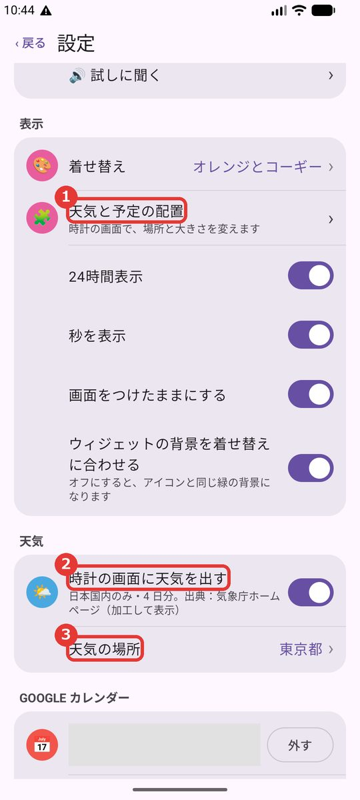
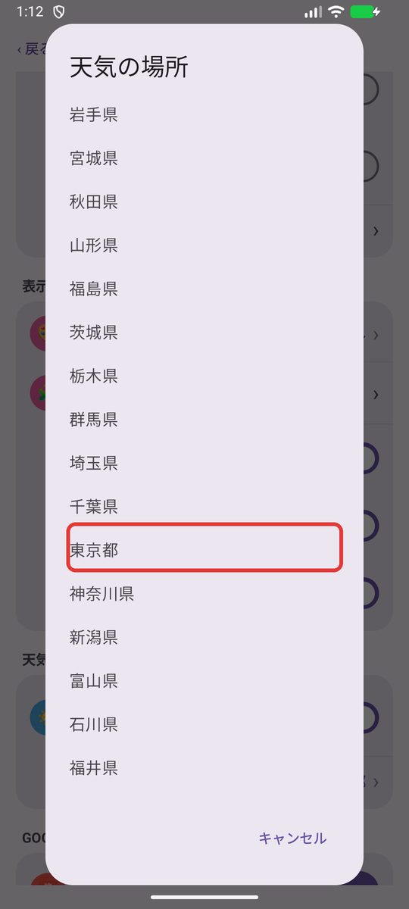
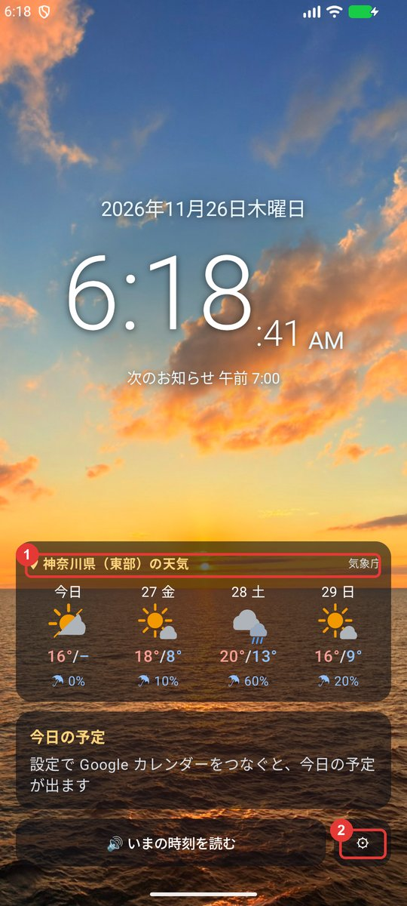
- 設定の「天気」のカードの「時計の画面に天気を出す」を ON にします（左の画像の 2）
- 「天気の場所」（左の画像の 3）を押し、一覧（真ん中）から地域を選びます
- 時計の画面（右の画像の 1 の欄）に、今日から 4 日分の天気・最高と最低の気温・降水確率が出ます
- 日本国内だけです。気象庁の予報を使い、5 時・11 時・17 時の発表のあとに新しくなります。位置情報は使いません
- 夕方にはじめて出したときは、今日の気温が「–」になることがあります（夕方の予報に今日の気温がないため）
直近の予定を出す
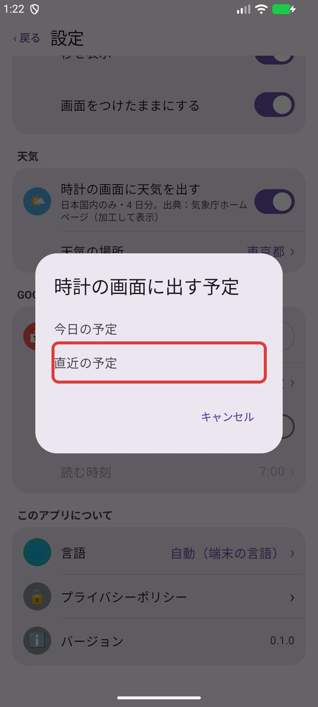
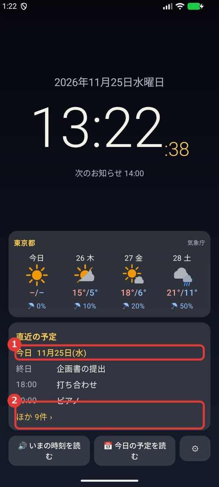
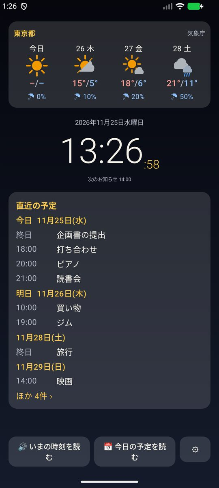
- 設定の「Google カレンダー」のカードの「時計の画面に出す予定」を押し、「今日の予定」か「直近の予定」を選びます（左の画像）
- 直近の予定では、これから 30 日の予定が日付ごとに並びます（真ん中の画像の 1）
- 入りきらない分は「ほか ○件」（真ん中の画像の 2）と出ます。押すと全部の一覧が開きます
- 欄を大きくするか、文字を小さくすると、出る予定の数が増えます（右の画像）。変え方は下の「場所と大きさを変える」を見てください
- 「今日の予定を読む」と毎日の読み上げで読むのは、今日の予定だけです
場所と大きさを変える
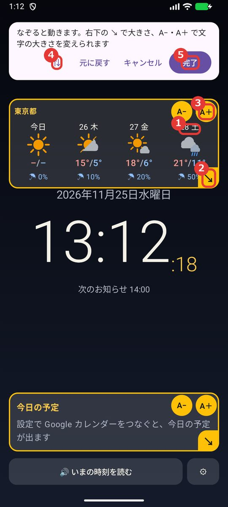
時計の画面で、天気か今日の予定の欄を長押しします（設定の「表示」の「天気と予定の配置」でも始められます）。欄に黄色い枠が付きます。
- 動かす：欄の中をなぞります
- 大きさ：右下の「↘」をなぞります（今日の予定は高さも変わります）
- 文字の大きさ：「A−」「A＋」を押します
- 「⇅」：帯が欄に重なるときに押すと、帯が上と下で入れ替わります
- 「完了」：決めます。「キャンセル」はやめる、「元に戻す」は最初の場所に戻す、です
- 時計は、欄を避けて空いたところに移ります。狭いときは小さくなります
- 縦の画面と横の画面で、別々に覚えます。横の画面は、横にしてから変えてください
- 時刻の大きさは「着せ替え」の画面で変えます（7.）
アプリを開かなくても、ホーム画面で時刻を見たり、声で聞いたりできます。
- ホーム画面の何もないところを長押しし、「ウィジェット」を押します
- 一覧から「しゃべる時計」を探し、押してホーム画面に置きます
- 赤い丸のボタン（画像の 1）を押すと、いまの時刻を声で読みます
- ボタンのほかの所を押すと、アプリが開きます
- Google カレンダーをつないでいると、赤い丸の下に「今日の予定を読む」ボタンも出ます（ウィジェットの高さが 1 マスのときは出ません）
- ウィジェットを長押しすると、まわりに出る丸をなぞって大きさを変えられます。大きくすると時刻の文字も大きくなります
- 24 時間か午前・午後か、日付の書き方は、アプリの設定と言語に合わせます
- ウィジェットの置き方は、端末によって少し違います
予定つき・天気つきのウィジェット
ウィジェットの一覧には、「しゃべる時計」のほかに「しゃべる時計（天気）」と「しゃべる時計（予定）」があります。端末の言語が英語のときは「Talking Clock (weather)」「Talking Clock (events)」です。
- 天気つき（画像の 1）は、今日から 4 日分の天気と最高・最低の気温を出します。場所は設定の「天気の場所」です（日本国内のみ、気象庁の予報）
- 予定つき（画像の 2）は、Google カレンダーのまだ終わっていない予定を、近い順に出します。明日の予定は「明日」、その先は日付が付きます。大きくすると、たくさん出ます（5 件まで）
- 予定と天気は、30 分ごとに読み直します。予定が終わると、次の予定に変わります
- 予定つきは、設定で Google カレンダーをつないでいると使えます。つないでいないときは、その案内が出ます
ウィジェットの背景
ウィジェットの背景は、着せ替えに合わせます。写真の着せ替えなら、写真がウィジェットの形に合わせて切り抜かれ、文字が読めるように少し暗くなります。着せ替えを変えると、ウィジェットも変わります。
- アイコンと同じ緑の背景にしたいときは、設定の「ウィジェットの背景を着せ替えに合わせる」を OFF にします
- 写真をダウンロードする前は、緑の背景になります。アプリで着せ替えの写真が出たあとに、ウィジェットにも出ます
10. よくある質問
時報が鳴りません・遅れます
設定の「時報を鳴らす」が ON か、時間帯と曜日が合っているかを確かめてください。設定の上に「時刻ちょうどに鳴らす許可がない」と出ているときは「許可する」を押してください。「充電中だけしゃべる」が ON のときは、充電していないと声では読みません。
声が聞こえません
メディアの音量を上げてください。端末の読み上げの機能（Google 音声サービスなど）が入っていないと読み上げられません。設定の「声の種類」の「声のデータを追加」から入れてください。
読み上げに料金はかかりますか？
かかりません。端末に入っている読み上げの機能を使っています。「ネット」の印がある声は、通信量を少し使います。
お薬の「飲んだ」を押し忘れました
カードは押すまで残ります。あとから押してもかまいません。同じお薬の次の時刻が来ると、新しい時刻のカードに変わります。
データの扱いを詳しく知りたい
プライバシーポリシーをご覧ください。設定・お知らせ・お薬は、この端末の中にだけ保存します。
お問い合わせ
DNGG-studio：dngg.studio@gmail.com
本アプリは医療機器ではありません。お薬の飲み方は、医師・薬剤師の指示に従ってください。写真：Unsplash。
紹介ページへ戻る